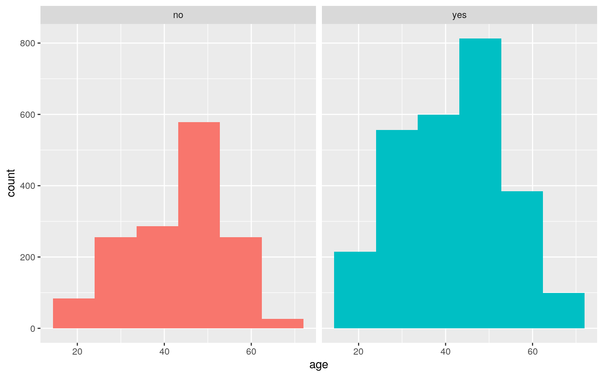
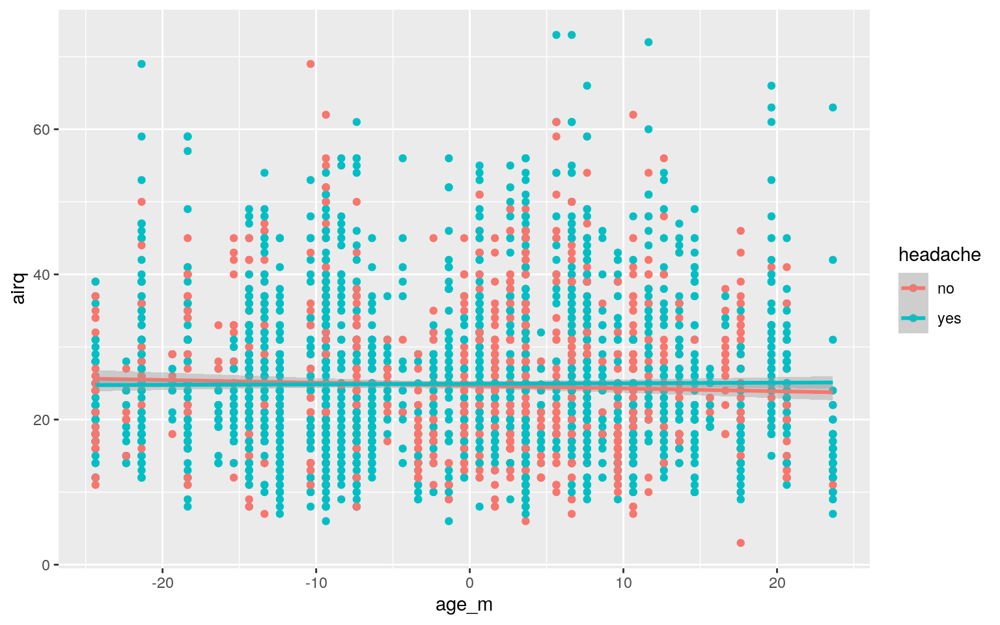
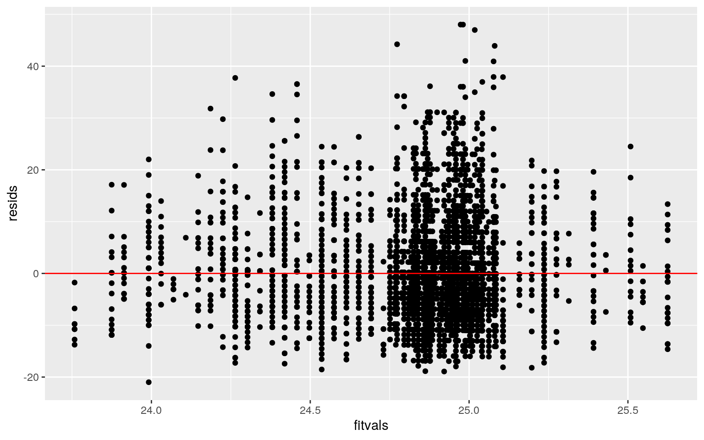
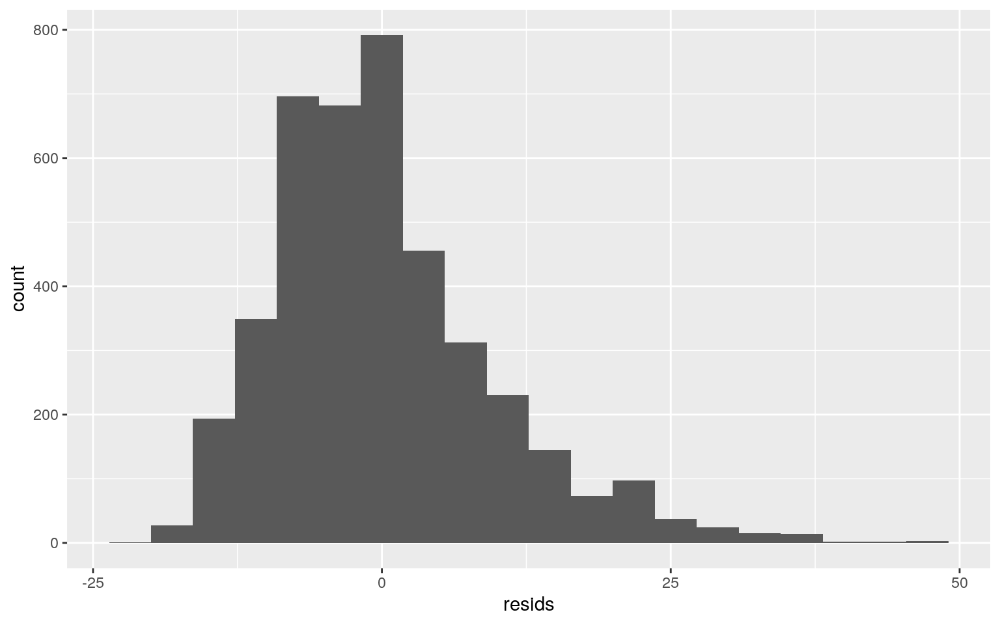
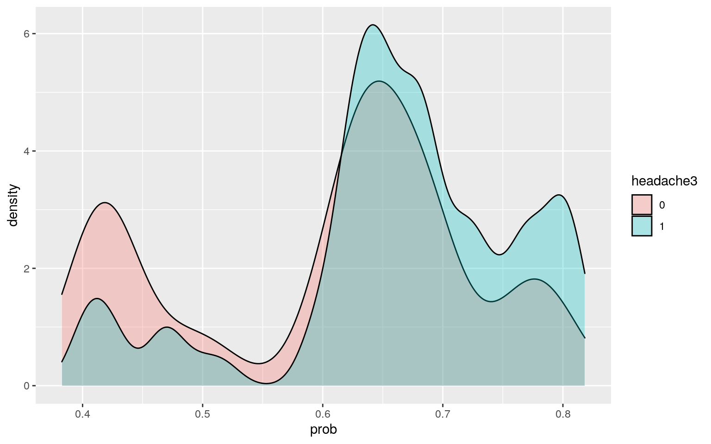
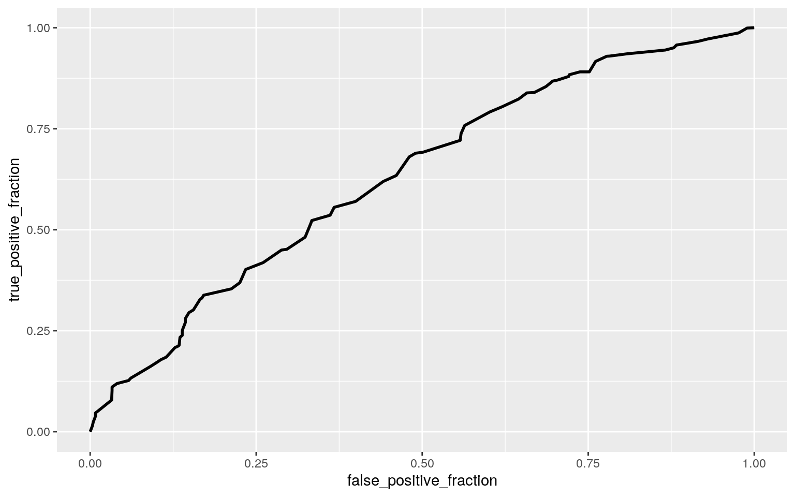

This is an R Markdown document. Markdown is a simple formatting syntax for authoring HTML, PDF, and MS Word documents. For more details on using R Markdown see http://rmarkdown.rstudio.com.
When you click the Knit button a document will be generated that includes both content as well as the output of any embedded R code chunks within the document. You can embed an R code chunk like this:
library(car)
head(KosteckiDillon)## id time dos hatype age airq medication headache sex
## 1 1 -11 753 Aura 30 9 continuing yes female
## 2 1 -10 754 Aura 30 7 continuing yes female
## 3 1 -9 755 Aura 30 10 continuing yes female
## 4 1 -8 756 Aura 30 13 continuing yes female
## 5 1 -7 757 Aura 30 18 continuing yes female
## 6 1 -6 758 Aura 30 19 continuing yes femaleThis dataset determines the treatment of migraine headaches and if they work. I got this dataset from the cars package because I am interested in the pharmaceutical companies and how they test if their treatments work. This research was done by Tammy Kostecki-Dillon. The variables are patient ID, time on treatment, days from the start of the study, if the migrane hahs an Aura mix or not, the age when treatment started, the airquality, the medication, and if there was a headache while on the medication, and the sex of the patient. There are 4,152 observations.
man1<-manova(cbind(time,dos, age, airq)~headache, data=KosteckiDillon)
summary(man1)## Df Pillai approx F num Df den Df Pr(>F)
## headache 1 0.0054072 5.6364 4 4147 0.0001601 ***
## Residuals 4150
## ---
## Signif. codes: 0 '***' 0.001 '**' 0.01 '*' 0.05 '.' 0.1
' ' 1summary.aov(man1)## Response time :
## Df Sum Sq Mean Sq F value Pr(>F)
## headache 1 2836 2835.52 6.0083 0.01428 *
## Residuals 4150 1958538 471.94
## ---
## Signif. codes: 0 '***' 0.001 '**' 0.01 '*' 0.05 '.' 0.1
' ' 1
##
## Response dos :
## Df Sum Sq Mean Sq F value Pr(>F)
## headache 1 12301 12301 0.1091 0.7412
## Residuals 4150 467977979 112766
##
## Response age :
## Df Sum Sq Mean Sq F value Pr(>F)
## headache 1 1810 1810.13 14.474 0.0001442 ***
## Residuals 4150 519007 125.06
## ---
## Signif. codes: 0 '***' 0.001 '**' 0.01 '*' 0.05 '.' 0.1
' ' 1
##
## Response airq :
## Df Sum Sq Mean Sq F value Pr(>F)
## headache 1 77 77.455 0.8556 0.355
## Residuals 4150 375677 90.525KosteckiDillon%>%group_by(headache)%>%summarize(mean(time),mean(dos), mean(age), mean(airq))## # A tibble: 2 x 5
## headache `mean(time)` `mean(dos)` `mean(age)`
`mean(airq)`
## <fct> <dbl> <dbl> <dbl> <dbl>
## 1 no 16.6 649. 43.2 24.6
## 2 yes 14.8 645. 41.9 24.9pairwise.t.test(KosteckiDillon$time,KosteckiDillon$headache, p.adj="none") ##
## Pairwise comparisons using t tests with pooled SD
##
## data: KosteckiDillon$time and KosteckiDillon$headache
##
## no
## yes 0.014
##
## P value adjustment method: nonepairwise.t.test(KosteckiDillon$dos,KosteckiDillon$headache, p.adj="none")##
## Pairwise comparisons using t tests with pooled SD
##
## data: KosteckiDillon$dos and KosteckiDillon$headache
##
## no
## yes 0.74
##
## P value adjustment method: nonepairwise.t.test(KosteckiDillon$age,KosteckiDillon$headache, p.adj="none")##
## Pairwise comparisons using t tests with pooled SD
##
## data: KosteckiDillon$age and KosteckiDillon$headache
##
## no
## yes 0.00014
##
## P value adjustment method: nonepairwise.t.test(KosteckiDillon$airq,KosteckiDillon$headache, p.adj="none")##
## Pairwise comparisons using t tests with pooled SD
##
## data: KosteckiDillon$airq and KosteckiDillon$headache
##
## no
## yes 0.36
##
## P value adjustment method: none1 - 0.95^9## [1] 0.3697506.05/9## [1] 0.005555556library(rstatix)
group <- KosteckiDillon$headache
DVs <- KosteckiDillon %>% select(time,dos, age, airq)
#Test multivariate normality for each group (null: assumption met)
sapply(split(DVs,group), mshapiro_test)## no yes
## statistic 0.9739862 0.9576896
## p.value 9.636261e-16 3.530539e-27#If any p<.05, stop. If not, test homogeneity of covariance matricesThe MANOVA test showed there was a significant difference between time, dos, age, and air quality. ANOVA showed there was a significant mean difference across time and age. The post hoc t-tests showed time and age again were significantly different. There were 9 tests performed, thus meaning the type I error was 0.3698. The bonferroni correction was 0.00556. This correction only makes age a significant difference. The Manova test assumptions were most likely not met because when testing the multivariate normality was not met. The p values were each less than .05, meaning this assumption was rejected.
h0<- mean(KosteckiDillon[KosteckiDillon$headache=="yes",]$age) -
mean(KosteckiDillon[KosteckiDillon$headache=="no",]$age)
mean_diff<-vector()
for(i in 1:5000){
boot <- KosteckiDillon %>% sample_frac(replace = T)
mean_diff[i] <- mean(boot[boot$headache=="yes",]$age) -
mean(boot[boot$headache=="no",]$age)
}
mean(mean_diff)## [1] -1.371817mean(h0)## [1] -1.37735ggplot(KosteckiDillon,aes(age,fill=headache))+geom_histogram(bins=6.5)+ facet_wrap(~headache,ncol=2)+theme(legend.position="none")
KosteckiDillon %>% group_by(headache) %>% summarize(m = mean(age)) %>%
summarize(diff(m))## # A tibble: 1 x 1
## `diff(m)`
## <dbl>
## 1 -1.38mean(mean_diff > 1.37735 | mean_diff < -1.37735)## [1] 0.4948The null hypothesis is that the mean difference for ages is the same for those who feel a headache and those that do not. The alternative hypothesis is that the mean difference for ages are not the same for those that feel headaches and those that do not. The p-value was 0.4862, so we failed to reject the null hothesis. The mean difference of the sample was -1.37735. The mean difference after making a random sample was -1.368408 but according to the p-value this difference was not significant. The p-value was 0.4862.
library(tidyverse)
library(lmtest)
library(sandwich)
KosteckiDillon$age_m <- KosteckiDillon$age - mean(KosteckiDillon$age, na.rm = T)
fit<-lm(airq~headache*age_m, data=KosteckiDillon)
summary(fit)##
## Call:
## lm(formula = airq ~ headache * age_m, data =
KosteckiDillon)
##
## Residuals:
## Min 1Q Median 3Q Max
## -20.992 -6.834 -0.862 4.160 48.027
##
## Coefficients:
## Estimate Std. Error t value Pr(>|t|)
## (Intercept) 24.67747 0.24767 99.639 <2e-16 ***
## headacheyes 0.25417 0.30879 0.823 0.4105
## age_m -0.03889 0.02360 -1.648 0.0994 .
## headacheyes:age_m 0.04630 0.02847 1.626 0.1040
## ---
## Signif. codes: 0 '***' 0.001 '**' 0.01 '*' 0.05 '.' 0.1
' ' 1
##
## Residual standard error: 9.513 on 4148 degrees of
freedom
## Multiple R-squared: 0.0009125, Adjusted R-squared:
0.0001899
## F-statistic: 1.263 on 3 and 4148 DF, p-value: 0.2854ggplot(KosteckiDillon, aes(x = age_m, y = airq, group = headache)) +
geom_point(aes(color = headache)) + geom_smooth(method = "lm",
aes(color = headache))
resids<-fit$residuals
fitvals<-fit$fitted.values
ggplot()+geom_point(aes(fitvals,resids))+geom_hline(yintercept=0, color='red')
ggplot()+geom_histogram(aes(resids), bins=20)
shapiro.test(resids)##
## Shapiro-Wilk normality test
##
## data: resids
## W = 0.93966, p-value < 2.2e-16coeftest(fit, vcov = vcovHC(fit))##
## t test of coefficients:
##
## Estimate Std. Error t value Pr(>|t|)
## (Intercept) 24.677465 0.235496 104.7891 < 2e-16 ***
## headacheyes 0.254170 0.302375 0.8406 0.40063
## age_m -0.038893 0.021972 -1.7701 0.07678 .
## headacheyes:age_m 0.046303 0.027508 1.6833 0.09240 .
## ---
## Signif. codes: 0 '***' 0.001 '**' 0.01 '*' 0.05 '.' 0.1
' ' 1The intercept is the predicted air quality for an average aged person with no headache which is 24.677. Headacheyes is when controlling for age, air quality for those that had a headache was 0.254 higher than those that said they did nto have a headache. As for age_m, it is when there is no headache, there is a decrease of 0.039 oof airquality for every one unit increase in age on average. As for headacheyes*age_m, the slope for age on airquality is 0.0463 higher for those that experience having a headache comared to those that did not have a headache. The linearity and homoskedsaticity seemed normal but the normality did not look normal, so it did not pass the test. When doing robust standard errors, the coefficients did not change. This means that the homoskedacity was met by this model because the robust SEs do not violate homoskedacity. The standard errors did not change much and the p-values showed that the intercept was still the onl significant value. The adjusted r-squared is 0.0002.
samp<-replicate(5000,{
boot<-sample_frac(KosteckiDillon,replace=T)
fit<-lm(airq~headache*age_m, data=boot)
coef(fit)
})
samp %>% t %>% as.data.frame %>% summarize_all(sd)## (Intercept) headacheyes age_m headacheyes:age_m
## 1 0.235282 0.303242 0.0220545 0.02758478When comparing the bootstrap standard errors to the robust standard errors, they are very similar. They differ by around 0.001 in some and a little more in others. The robust standard errors are onl a bit higher than the bootstrapped standard errors.
Kostecki1<-KosteckiDillon%>%mutate(headache2=ifelse(headache=="yes",1,0))
head(Kostecki1)## id time dos hatype age airq medication headache sex
age_m headache2
## 1 1 -11 753 Aura 30 9 continuing yes female -12.36392 1
## 2 1 -10 754 Aura 30 7 continuing yes female -12.36392 1
## 3 1 -9 755 Aura 30 10 continuing yes female -12.36392 1
## 4 1 -8 756 Aura 30 13 continuing yes female -12.36392 1
## 5 1 -7 757 Aura 30 18 continuing yes female -12.36392 1
## 6 1 -6 758 Aura 30 19 continuing yes female -12.36392 1fit1 <- glm(headache2 ~ medication+age, data=Kostecki1, family=binomial(link="logit"))
summary(fit1)##
## Call:
## glm(formula = headache2 ~ medication + age, family =
binomial(link = "logit"),
## data = Kostecki1)
##
## Deviance Residuals:
## Min 1Q Median 3Q Max
## -1.8467 -1.3333 0.7690 0.9312 1.3860
##
## Coefficients:
## Estimate Std. Error z value Pr(>|z|)
## (Intercept) 0.317475 0.145782 2.178 0.0294 *
## medicationreduced 1.505339 0.105499 14.269 < 2e-16 ***
## medicationcontinuing 0.877078 0.084038 10.437 < 2e-16
***
## age -0.013258 0.003001 -4.418 9.97e-06 ***
## ---
## Signif. codes: 0 '***' 0.001 '**' 0.01 '*' 0.05 '.' 0.1
' ' 1
##
## (Dispersion parameter for binomial family taken to be 1)
##
## Null deviance: 5415.9 on 4151 degrees of freedom
## Residual deviance: 5180.8 on 4148 degrees of freedom
## AIC: 5188.8
##
## Number of Fisher Scoring iterations: 4prob <- predict(fit1, type = "response")
pred <- ifelse(prob > 0.5, 1, 0)
table(prediction = pred, truth = Kostecki1$headache2) %>% addmargins## truth
## prediction 0 1 Sum
## 0 414 310 724
## 1 1072 2356 3428
## Sum 1486 2666 4152#accuracy
(414+2356)/4152## [1] 0.6671484#tnr
2356/3428## [1] 0.6872812#tpr
414/724## [1] 0.5718232#ppv
414/1486## [1] 0.2786003Kostecki1$prob <- predict(fit1, newdata = Kostecki1,
type = "response")
kostecki2 <- Kostecki1 %>% mutate(headache3 = as.factor(Kostecki1$headache2))
ggplot(kostecki2, aes(prob , fill=headache3)) +
geom_density(alpha=.3)
library(plotROC)
ROCplot <- ggplot(Kostecki1) + geom_roc(aes(d = headache2,
m = prob), n.cuts = 0)
ROCplot
calc_auc(ROCplot)## PANEL group AUC
## 1 1 -1 0.6333317The intercept is the odds of having a headache for a middleaged person with continuing medication and it is 1.195. The medication none is when controlling for age, the odds of having a headache is 0.877 times less than the odds of having a headache while continuing medication. The medication reduced is when controlling for age, the odds of having a headache is 0.628 times more than the odds of having a headache while continuing the medication. Age is when controlling for medication, the odds of having a headache is 0.013 times less for ages other than those of middleage. The accuracy is 0.6671484. The specificity is 0.6872812. The sensitivity is 0.5718232. The precision is 0.2786003. The AUC is 0.633 which is poor. This is a really bad plot since it is pretty close to a straight line, meaning it is a random classifier.
library(glmnet)
class_diag <- function(probs,truth){
tab<-table(factor(probs>.5,levels=c("FALSE","TRUE")),truth)
acc=sum(diag(tab))/sum(tab)
sens=tab[2,2]/colSums(tab)[2]
spec=tab[1,1]/colSums(tab)[1]
ppv=tab[2,2]/rowSums(tab)[2]
f1=2*(sens*ppv)/(sens+ppv)
if(is.numeric(truth)==FALSE & is.logical(truth)==FALSE) truth<-as.numeric(truth)-1
ord<-order(probs, decreasing=TRUE)
probs <- probs[ord]; truth <- truth[ord]
TPR=cumsum(truth)/max(1,sum(truth))
FPR=cumsum(!truth)/max(1,sum(!truth))
dup<-c(probs[-1]>=probs[-length(probs)], FALSE)
TPR<-c(0,TPR[!dup],1); FPR<-c(0,FPR[!dup],1)
n <- length(TPR)
auc<- sum( ((TPR[-1]+TPR[-n])/2) * (FPR[-1]-FPR[-n]) )
data.frame(acc,sens,spec,ppv,f1,auc)
}
fit2<-glm(headache2~.,data=Kostecki1,family="binomial")
coef(fit2)## (Intercept) id time dos
## -2.656607e+01 8.897163e-11 3.421224e-11 -9.732477e-12
## hatypeMixed hatypeNo Aura age airq
## 2.679356e-08 -2.585734e-09 3.858819e-09 1.757654e-10
## medicationreduced medicationcontinuing headacheyes
sexmale
## -3.865621e-07 -2.449137e-07 5.313214e+01 -1.082654e-08
## age_m prob
## NA 1.164103e-06probs<-predict(fit2,type="response")
class_diag(probs,Kostecki1$headache2) ## acc sens spec ppv f1 auc
## 1 1 1 1 1 1 1k=10
data<-Kostecki1[sample(nrow(Kostecki1)),]
folds<-cut(seq(1:nrow(Kostecki1)),breaks=k,labels=F)
diags<-NULL
for(i in 1:k){
train<-data[folds!=i,]
test<-data[folds==i,]
truth<-test$headache2
fit<-glm(headache2~.,data=Kostecki1,family="binomial")
probs<-predict(fit,newdata = test,type="response")
diags<-rbind(diags,class_diag(probs,truth))
}
summarize_all(diags,mean)## acc sens spec ppv f1 auc
## 1 1 1 1 1 1 1y<-as.matrix(Kostecki1$headache2)
x<-model.matrix(headache2~.,data=Kostecki1)[,-1]
cv<-cv.glmnet(x,y,family="binomial")
lasso<-glmnet(x,y,family="binomial",lambda=cv$lambda.1se)
coef(lasso)## 14 x 1 sparse Matrix of class "dgCMatrix"
## s0
## (Intercept) -7.044751
## id .
## time .
## dos .
## hatypeMixed .
## hatypeNo Aura .
## age .
## airq .
## medicationreduced .
## medicationcontinuing .
## headacheyes 14.674270
## sexmale .
## age_m .
## prob .k=10
data<-Kostecki1[sample(nrow(Kostecki1)),]
folds<-cut(seq(1:nrow(Kostecki1)),breaks=k,labels=F)
diags<-NULL
for(i in 1:k){
train<-data[folds!=i,]
test<-data[folds==i,]
truth<-test$headache2
fit<-glm(headache2~headache,data=Kostecki1,family="binomial")
probs<-predict(fit,newdata = test,type="response")
diags<-rbind(diags,class_diag(probs,truth))
}
diags%>%summarize_all(mean)## acc sens spec ppv f1 auc
## 1 1 1 1 1 1 1The accuracy, sensitivity, specificity, precision, and AUC are all 1. This either means that they were all really great and the model was perfect or there was an error when computing this. After doing a 10-fold CV with the same sample, I got the accuracy of 0.975, sensitivity of 0.769, specificity of 0.993, pprecision of 0.861, and AUC of 0.983. This is still a really good model and seems more accurate than a perfect score from earlier. Even though the AUC decreased from the in-sample model, it is still really high and is considered great. When doing lasso, only the intercept adn headacheyes were retained. This means that headache yes is the most predictive variable. The AUC after only doing testing the variables on the lasso showed was great at 0.989. This was a little higher than the previous but was still less than the first one, which had an AUC of 1. Overall, I feel this is the most accurate since it is not perfect but is the highest.
Note that the echo = FALSE parameter was added to the code chunk to prevent printing of the R code that generated the plot.